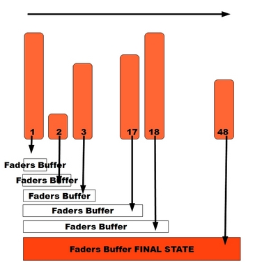
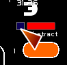
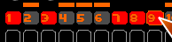
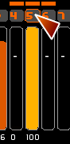
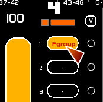
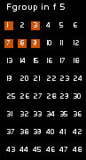

Jusqu'à présent, les faders ont été envisagés en mode HTP: le plus haut niveau prend le pas dans la restitution du Buffer des Faders.
Chaque Fader est lu, du fader 1 au fader 48, et comparé à l'état du Buffer des Faders Général.
Si un circuit issu d'un Fader est supérieur au niveau du Buffer des Faders Général, ce circuit prend la valeur issue de ce fader.
L'action est faite sur le résultat issu de l'action du fader sur le buffer fader général.
Exemple:
Le Buffer des Faders, après lecture du Fader 1 contiendra 1/10 et 30/50.
Le Buffer des Faders, après lecture du Fader 1 et 2 contiendra 1/10 2/50 et 30/50.
Le Buffer des Faders, après lecture du Fader 1, 2 et 3 contiendra 1/90 2/50 et 30/50.
Ce jusqu'au Fader 48.

Ceci est le mode HTP ( Highest takes preeminence) : la plus grande valeur est gardée.
Concernant les FX, il faut imaginer les faders comme des calques.
Le fader 1 est tout en dessous. Le fader 48 est tout au dessus, et le 48 est donc le dernier à avoir une incidence.
Au lieu de faire une vérification en HTP, on choisira des modes de calculs en soustraction, addition, exclusion.
Les Fx de restitution sont basés sur les principes de compositing en vidéo ou de gestion des calques pour les logiciels de dessin.
On change le mode d'action du Fader en clickant sur la case d'FX.
Quand un circuit est contenu dans le fader, et que son état rendu est supérieur à 0, il va se comporter de la manière suivante:
| Mode | Couleur du mode | Calcul |
| HTP | Orange | C'est le mode normal. Le plus haut niveau l'emporte |
| Off | Noir | Le rendu est retiré des calculs des buffer Faders pour être injecté dans un autre fader |
| Substract | Rouge | Le rendu est soustrait de l'état du buffer Faders |
| Add | Blanc | Le rendu est ajouté à l'état du buffer Faders |
| Screen | Blanc Bleu | On prend la moyenne de l'état dans le buffer Faders et lee Fader concerné. On divise par deux cette moyenne et on a l'ajoute au Buffer Faders |
| Exclusion | Bleu foncé | Si le buffer Faders est supérieur au rendu du Fader, le rendu du Fader est retranché au buffer. |
| Si le buffer Fader est inférieur au rendu du Fader, il est retranché du rendu du Fader |
Applications pratiques:
L'impact des faders peut être exécuté dans le buffer du séquenciel ( issu du calcul du crossfade).
Enclencher la pastille carrée: elle est alors bleue, indiquant que le calcul des FX est reporté dans le séquenciel.

Vous pouvez créer des Faders Group ( Fgroup) via la mise en Off d'un fader.
Un Fgroup est un fader qui contient la résultante de faders qui y ont été affectés.
Les Fgroups fonctionnent comme des sous groupes en son, uniquement en HTP.
Pour créer un Fgroup:

Affecter à un dock:
en fenêtre minifaders:

en fenêtre faders:

Dans la fenêtre minifaders, vous pouvez voir au survol le contenu d'un Fgroup.
